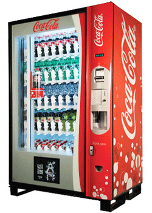

The Internet of Things has not been around for very long, The term was invented in 1999, initially to promote Radio Frequency Identification technology.
The popularity of the term Internet of Things did not start to gain attention until 2010/2011 and reached mass market in early 2014.

By the year 2013, the Internet of Things had evolved into to a system using multiple technologies ranging from
the Internet to wireless communication and from micro-electromechanical systems (MEMS), to embedded systems.
Although The Internet of Things wasn’t officially named until 1999. One of the first examples of an
Internet of Things is from the early 1980s when local programmers connected to a refrigerated Coca Cola machine, located at
Carnegie Melon University, to the internet in order to check and see if there was a drink available
and if the beverage was cold before making the trip over to the machine.